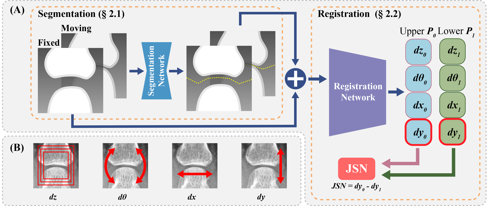

Abstract
Rheumatoid arthritis (RA) is a chronic autoimmune inflammatory disease that results in progressive articular destruction and severe disability. Joint space narrowing (JSN) progression has been regarded as an important indicator for RA progression and has received sustained attention. In the diagnosis and monitoring of RA, radiology plays a crucial role to monitor joint space. A new framework for monitoring joint space by quantifying JSN progression through image registration in radiographic images has been developed. This framework offers the advantage of high accuracy, however, challenges do exist in reducing mismatches and improving reliability. In this work, a deep intra-subject rigid registration network is proposed to automatically quantify JSN progression in the early stage of RA. In our experiments, the mean-square error of Euclidean distance between moving and fixed image is 0.0031, standard deviation is 0.0661 mm, and the mismatching rate is 0.48%. The proposed method has sub-pixel level accuracy, exceeding manual measurements by far, and is equipped with immune to noise, rotation, and scaling of joints. Moreover, this work provides loss visualization, which can aid radiologists and rheumatologists in assessing quantification reliability, with important implications for possible future clinical applications. As a result, we are optimistic that this proposed work will make a significant contribution to the automatic quantification of JSN progression in RA.
Key words
Deep Learning, Image Registration, Rheumatoid Arthritis, Joint Space Narrowing, Radiology, Computer-aided Diagnosis.
Appeared in:
Computerized Medical Imaging and Graphics (IF: 4.9),
July 15, 2023.
Result

Figure 1. (A) Four rigid transformation parameters are shown that are used in this work; dz: scaling, dθ: rotation, dx: displacement on x-axis, dy: displacement on y-axis. (B) The overview of our proposed deep learning image registration based JSN progression quantification methodology. This work can be divided into two steps: joint segmentation, and JSN progression quantization. Take a MCP joint as an example, this work can be performed as follow: (i) A supervised U-net++ based network is implemented to segment the proximal phalanx bone and metacarpal bone region of the MCP joint. (ii) An un-supervised ResNet-like based deep registration network is proposed to quantify the rigid transformation parameters of the proximal phalanx bone and metacarpal bone region. (iii) The JSN progression can be obtained by calculating the displacement difference on y-axis between two bone region.
In this work, we propose a deep learning method for joint space narrowing progression quantification in rheumatoid arthritis. The proposed method includes an image segmentation network based on U-net++, and a ResNet-like deep registration network for displacement quantification. Our extensive clinical experiments demonstrate that this work can achieve sub-pixel level accuracy monitoring of joint space in the early stage of rheumatoid arthritis.
Our approach can handle complex clinical situations and reduce mismatches due to inconsistent angle and spatial resolution of radiography images. Additionally, our approach provides a visualization loss as a reliability indicator that can be used by radiologists and rheumatologists to assess the quantification reliability, thus, making it a promising tool for future clinical applications.
Reference
Citation
H., Wang, Y., Ou, W., Fang, P., Ambalathankandy, N., Goto, G., Ota, T. Okino, J. Fukae, K. Sutherland, M. Ikebe, and T., Kamishima, A Deep Registration Method for Accurate Quantification of Joint Space Narrowing Progression in Rheumatoid Arthritis. in Computerized Medical Imaging and Graphics, vol. 108, no. 9, pp. 102273, Sept. 2023, doi: 10.1016/j.compmedimag.2023.102273.
BibTeX
article{wang2023deep, title={A Deep Registration Method for Accurate Quantification of Joint Space Narrowing Progression in Rheumatoid Arthritis}, author={Wang, Haolin and Ou, Yafei and Fang, Wanxuan and Ambalathankandy, Prasoon and Goto, Naoto and Ota, Gen and Okino, Taichi and Fukae, Jun and Sutherland, Kenneth and Ikebe, Masayuki and Kamishima, Tamotsu}, journal={Computerized Medical Imaging and Graphics}, volume = {108}, issn = {0895-6111}, doi = {https://doi.org/10.1016/j.compmedimag.2023.102273}, url = {https://www.sciencedirect.com/science/article/pii/S0895611123000915}, pages={102273}, year={2023}, publisher={Elsevier}}
Acknowledgments
This work was supported in part by the Japan Society for the Promotion of Science (JSPS) Grants-in-Aid for Scientific Research (KAKENHI) under Grants 21K07611, and in part by JST SPRING under Grant JPMJSP2119.